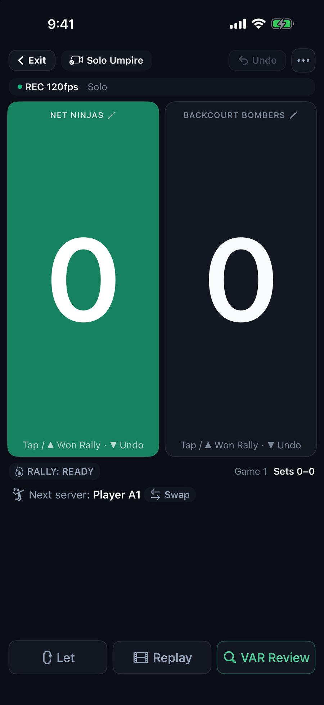

iPhone · Official BWF scoring
Score with your thumb, review in slow-mo
Tap or swipe up on a side to award the rally, swipe down to take it back. Tap VAR Review and the last rally plays straight from the rolling buffer — no waiting for an export — in a continuous ¼× slow-motion loop you can step frame by frame. The server, service court, 11-point interval and change of ends are tracked for you in singles and doubles.
